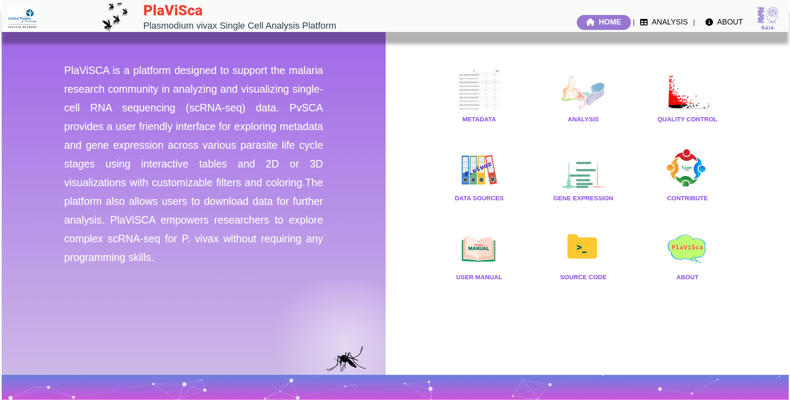
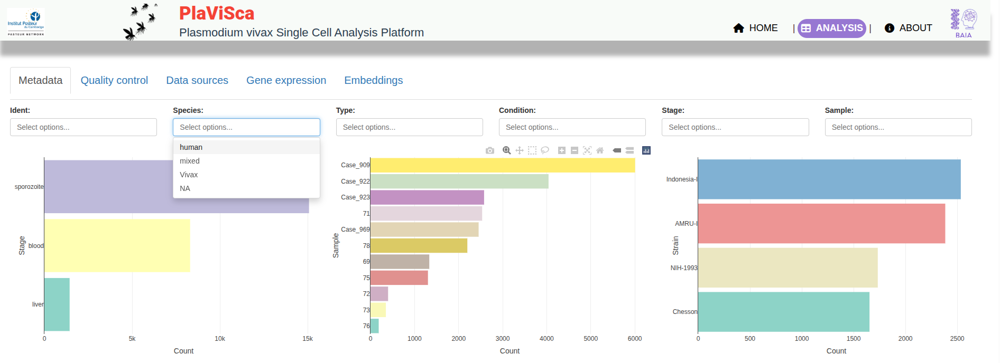
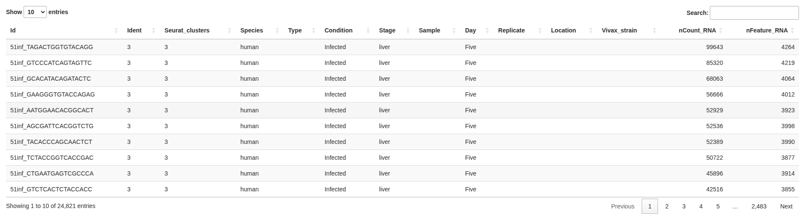

PlaViSca Platform User Manual
Welcome to PlaViSca, a user-friendly platform for analyzing and visualizing Plasmodium vivax single-cell RNA sequencing data.
This manual guides you through the platform's main features and usage.
Home
The Home page provides an introduction to PlaViSca and quick links to main features:



- Metadata: Explore metadata with filter options, charts and table are interactive and respond to the filters.
- Analysis: Perform customized data filtering and visualization.
- Quality Control: View data quality metrics.
- Data Sources: Access original datasets used in PlaViSca.
- Gene Expression: Investigate expression levels of genes across samples.
- User Manual: Access this manual.
- Source Code: View the code repository.
- About: Learn about the development team and collaborators.
Analysis
The Analysis section allows you to filter and visualize single-cell data interactively:
Filters:
- Infection stage: Select from Blood, Liver, Sporozoite.
- Parasite stage: Choose specific life stages (e.g., Trophozoite, Ring, Schizont, etc.).
- Size: Adjust point sizes in plots (Small, Medium, Large).
- Color: Choose how cells are colored by metadata (Identity, Stage, Strain, etc.).
- Data Type: Choose raw, normalized, or scaled expression data.
- Gene Selection: Pick genes to highlight with links to PlasmoDB and NCBI databases.
- Plot Type: Toggle between 2D and 3D plots.
- X-axis and Y-axis: Select principal components or other dimensions for plotting.
Visualization:
The main panel shows interactive plots and metadata tables with options to download data.
Quality Control
View plots summarizing data quality:
- Cell counts and detected features per cell.
- PCA standard deviation and variable genes analysis.
Data Sources
This tab lists the original datasets and sources used to build PlaViSca, providing transparency and citation information.
Gene Expression
Investigate expression patterns of specific genes:
- Select genes to visualize expression profiles.
- Toggle normalization types: raw, normalized, or scaled.
- Group expression data by categories such as Stage.
- Access external gene databases directly via links.
- Add or remove genes dynamically for multi-gene comparison.
Embeddings
Explore dimensionality reduction plots:
- Toggle between integrated and unintegrated data.
- Choose embedding types: PCA, UMAP, or tSNE.
- View interactive plots visualizing cellular heterogeneity.
About
Learn about the team and collaborators behind PlaViSca:
- Developed by the Bioinformatics and Artificial Intelligence Applications Unit (BAIA), Institut Pasteur du Cambodge (IPC).
- Collaborations with the Malaria Unit at IPC and University of Georgia, USA.
- Contact details for key contributors are provided for support and collaboration.
For more information, please visit the Institut Pasteur du Cambodge website or contact the development team.